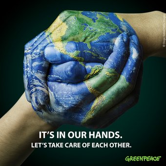

1st may, 2021
Unemployment in Today’s Recession Compared to the Global Financial Crisis
There has been much discussion in recent months about how workers who transitioned to working from home—and those who were deemed “essential”—are less affected by the layoffs and job losses brought on by lockdowns than are workers in “social” jobs that require closer human interaction, like restaurant workers. However, our new IMF staff research suggests that this does not tell the full story.
In particular, we find that while teleworkable jobs are indeed more secure than non-teleworkable occupations during the current pandemic-related recession, this pattern has also been observed during the global financial crisis of 2007–09—meaning that something more than pandemic-related restrictions is at play.

13th October, 2020
Not all heroes wear capes!
One story that trended over social media is about Suzanne Hoylaerts, a Belgian woman 90 years of age. She offered her respirator to another patient saying, “I don’t want the artificial respirator, save it for younger patients. I had a beautiful life. Don’t cry, you did everything you could for me.”
Age, wealth, race, religion, politics, and all the other things that make us who we are as individuals seem to matter a little less,
and the fact that we are all human and in this world together, comes to matter more.
1st January, 2021
Helping Out
If you would like to be of assistance to the staff of TAFER Resorts as well as the communities that are affected by COVID-19, we have determined the most effective way for us to coordinate
these efforts is via the Eagle’s Wings Foundation (EWF).The mission of Eagle’s Wings is to provide assistance to various charitable organizations
in the Villa Group and TAFER Resorts destinations. Thankfully EWF has been a long-time supporter of our communities, and now more than ever they want to join with you to make a difference in this time of need.To donate to the relief efforts for those affected by COVID-19, please visit the EWF site and click on the PayPal link. All donations received through April 30 will be earmarked directly for COVID-19 relief, and will not be included in the funds donated throughout the year for general grant purposes.
Please visit the EWF website at www.eagles-wings-foundation.org today and click on the “donate now” button to help those in need. We thank you in advance for your generosity in helping the communities of our resorts affected by COVID-19.